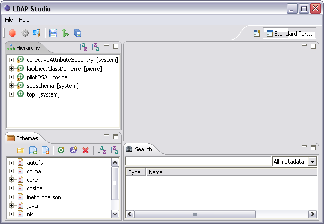

A Workbench consists of:
A perspective is a group of views and editors in the Workbench window. One or more perspectives can exist in a single Workbench window. Each perspective contains one or more views and editors. Within a window, each perspective may have a different set of views but all perspectives share the same set of editors.
A view is a visual component within the Workbench. It is typically used to navigate a hierarchy of information (such as the resources in the Workbench), open an editor, or display properties for the active editor. Modifications made in a view are saved immediately. Normally, only one instance of a particular type of view may exist within a Workbench window.
An editor is also a visual component within the Workbench. It is typically used to edit or browse a resource. Modifications made in an editor follow an open-save-close lifecycle model. Multiple instances of an editor type may exist within a Workbench window.
Some features are common to both views and editors. We use the term "part" to mean either a view or an editor. Parts can be active or inactive, but only one part can be active at any one time. The active part is the one whose title bar is highlighted. If an editor tab is not highlighted it indicates the editor is not active, however views may show information based on the last active editor.
In the image below, the Hierarchy view is active.

Clicking on the Schemas view causes the Schemas' title bar to become highlighted and the Hierarchy's title bar to no longer be highlighted, as shown below. The Schemas view is now active.